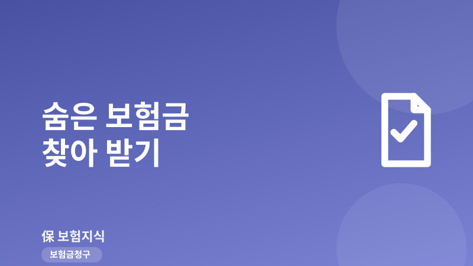
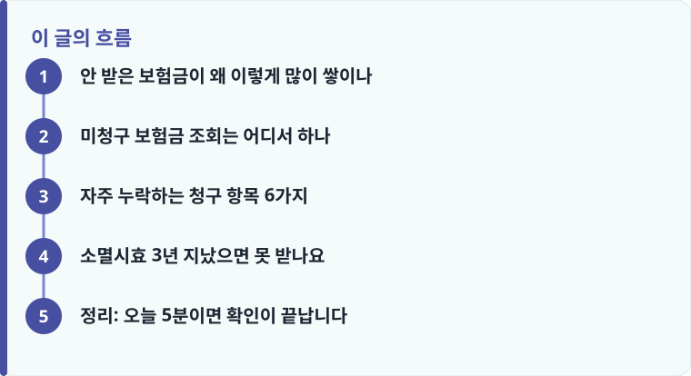

숨은 보험금은 '내보험찾아줌'(cont.insure.or.kr)에서, 소멸시효가 지난 휴면 보험금은 서민금융진흥원 휴면계좌통합조회에서 각각 확인합니다.
깁스 골절 진단비, 통원비, 처방약 조제비, 한방 치료, 수술 1~5종, 후유장해는 청구를 잊고 지나가기 쉬운 대표 누락 항목입니다.
보험금청구권 소멸시효는 3년입니다. 다만 3년이 지났어도 지급 사례가 있으니 포기하지 말고 청구·이의를 시도할 값어치가 있습니다.
안 받은 보험금이 왜 이렇게 많이 쌓이나
숨은 보험금이 생기는 이유는 대부분 '몰라서'입니다. 보험사는 지급 사유가 생기면 안내하지만, 이사·연락처 변경으로 우편이 반송되거나, 계약자와 피보험자·수익자가 달라 정작 받을 사람이 통보를 못 받는 경우가 흔합니다. 부모가 자녀 앞으로 들어둔 저축성 보험의 중도·만기 보험금, 사망보험금인데 수익자가 청구를 안 한 경우가 대표적입니다.
또 하나는 '작은 금액이라 안 챙긴' 경우입니다. 골절로 깁스만 하고 입원은 안 해서 진단비를 넘긴다든가, 감기·물리치료로 통원했는데 실손 청구를 미뤄두다 잊는 식입니다. 이렇게 몇 만 원짜리를 여러 건 흘려보내면 몇 년 치가 수십만 원이 됩니다. 청구 자체가 낯설다면 보험금 청구 절차와 기본 흐름을 먼저 훑어두면 조회 결과를 실제 청구로 연결하기 쉽습니다.
미청구 보험금 조회는 어디서 하나
숨은 보험금은 생명보험협회와 손해보험협회가 함께 운영하는 '내보험찾아줌'(cont.insure.or.kr)에서 한 번에 조회합니다. 공동인증서나 카카오·PASS 같은 간편인증으로 로그인하면 내가 계약자·피보험자·수익자로 등록된 전 보험사 계약과 숨은 보험금이 한 화면에 뜹니다. 여기서 숨은 보험금은 크게 세 가지입니다. 만기 전 지급 사유가 생겼는데 안 받은 '중도보험금', 만기가 지난 '만기보험금', 그리고 소멸시효까지 지나 잠긴 '휴면보험금'입니다.
휴면보험금은 성격이 조금 다릅니다. 소멸시효가 지나면 보험사가 서민금융진흥원(휴면예금관리재단)으로 이관하는데, 이렇게 넘어간 돈은 서민금융진흥원 휴면계좌통합조회(sleepmoney.kinfa.or.kr)에서 휴면예금과 함께 확인하고 신청해 찾을 수 있습니다. 즉 '내보험찾아줌'에서 안 보이는 오래된 보험금은 서민금융진흥원 쪽을 한 번 더 확인해야 놓치지 않습니다. 사망보험금처럼 서류가 복잡한 건은 청구할 때 필요한 서류 종류를 미리 챙겨두면 방문 없이 처리 속도가 붙습니다.

자주 누락하는 청구 항목 6가지
조회로 '큰 목돈'을 찾았다면, 이번엔 그동안 청구를 잊은 '작은 건'을 되짚을 차례입니다. 실무에서 가장 많이 빠뜨리는 항목은 다음과 같습니다. 첫째, 골절 후 입원 없이 깁스·부목만 한 경우의 골절 진단비. 둘째, 병원 통원 진료비. 셋째, 처방받아 약국에서 산 처방약 조제비(약제비)로, 실손에서 통원 한도 안에 포함됩니다. 넷째, 한방병원 치료비인데 첩약·약침 등 비급여 여부에 따라 처리가 갈립니다. 다섯째, 종류별로 정액이 나오는 수술 1~5종 수술비로, 맹장·백내장·용종 제거처럼 간단한 시술도 해당될 수 있습니다. 여섯째, 다치거나 아픈 뒤 장해가 남았을 때의 후유장해입니다.
이 항목들은 진료비 영수증과 진단서·수술확인서만 있으면 소급 청구가 가능합니다. 실손은 통원 건당 자기부담(급여 진료 1만~2만 원, 병원 규모에 따라 다름)을 빼고 지급되니 소액이라 지레 포기하지 말고, 여러 건을 모아 실손보험 청구 방법대로 한꺼번에 넣으면 효율적입니다. 자주 나오는 서류 실수는 청구 서류 체크리스트로 미리 점검하면 반려를 줄일 수 있습니다.
작성·검수 기준
이 글은 특정 보험사 상품을 권유하기 위한 것이 아니라, 안 받은 보험금을 확인하고 청구하는 일반적인 방법과 공식 조회 창구를 안내하기 위해 작성했습니다. 숨은 보험금의 유형, 지급 조건, 소멸시효 기산점은 계약 종류와 약관, 사실관계에 따라 달라질 수 있습니다.
실제 지급 여부는 개별 약관과 심사에 따라 달라지므로, 반려된 경험이 있다면 보험금이 거절된 실제 사례를 함께 확인하며 대응하는 것이 정확합니다.
소멸시효 3년 지났으면 못 받나요
보험금청구권의 소멸시효는 상법상 3년입니다. 원칙적으로 지급 사유가 발생한 날부터 3년 안에 청구해야 하지만, 3년이 지났다고 곧바로 포기할 필요는 없습니다. 소멸시효의 기산점은 '보험사고를 안 날'을 기준으로 다투는 사례가 있고, 후유장해처럼 나중에 확정되는 담보는 장해가 확정된 시점부터 시효를 보기도 합니다. 또한 보험사가 지급 안내를 제대로 하지 않은 경우 등에는 시효가 지난 뒤에도 지급이 이뤄진 사례가 있으니, 일단 청구서를 접수하고 다투는 편이 낫습니다. 조회부터 청구, 이의 제기까지 오늘 바로 밟을 순서는 다음과 같습니다.
- '내보험찾아줌'(cont.insure.or.kr)에 간편인증으로 로그인해 숨은 보험금과 전 계약을 조회합니다.
- 오래된 건은 서민금융진흥원 휴면계좌통합조회(sleepmoney.kinfa.or.kr)에서 한 번 더 확인합니다.
- 최근 3년 내 병원·약국 이용 내역을 되짚어 깁스·통원·처방약·수술 등 미청구 건을 목록화합니다.
- 진료비 영수증·세부내역서·진단서를 모아 보험사 앱이나 콜센터로 소급 청구합니다.
- 시효 경과나 반려를 이유로 거절되면 근거를 요구하고, 금융감독원 분쟁조정(1332)으로 이의를 제기합니다.
정리: 오늘 5분이면 확인이 끝납니다
안 받은 보험금 찾기의 핵심은 '두 곳을 확인하고, 작은 건까지 되짚는' 것입니다. 숨은 보험금은 내보험찾아줌, 시효 지난 휴면 보험금은 서민금융진흥원에서 조회하고, 깁스·통원·처방약·한방·수술·후유장해처럼 흘려보낸 항목을 3년 치 소급해 한꺼번에 청구하면 생각보다 큰 금액이 돌아옵니다. 시효가 지났더라도 다퉈볼 여지가 있으니 접수부터 해보는 것을 권합니다. 보장 자체를 다시 점검하고 싶다면 보험 점검을 요청해 누락과 중복을 한 번에 정리하는 방법도 있습니다.
다른 보험 정보 글이 궁금하다면 보험지식 블로그에서 이어 읽어 보세요. 가입 전에는 반드시 약관과 상품설명서를 확인하는 것이 가장 안전한 방법입니다.